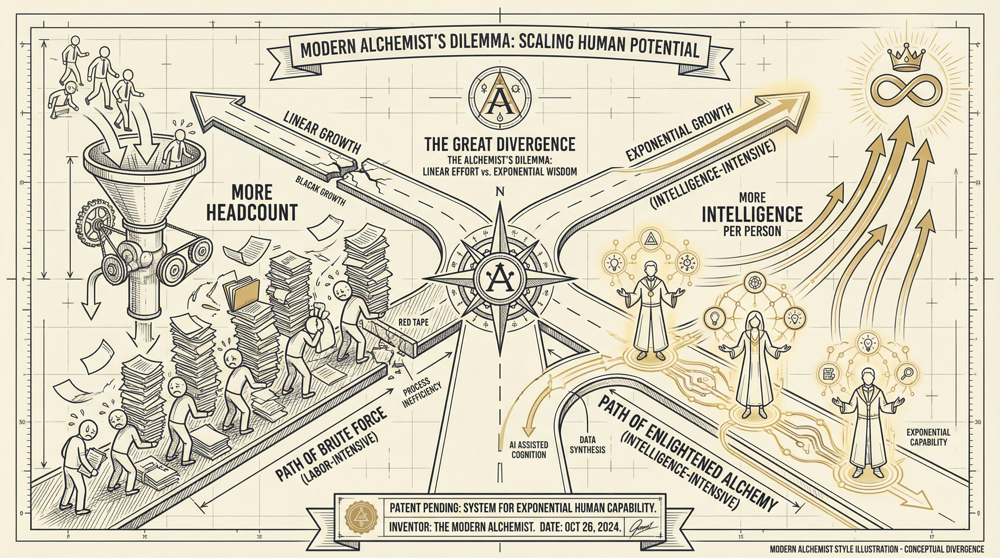
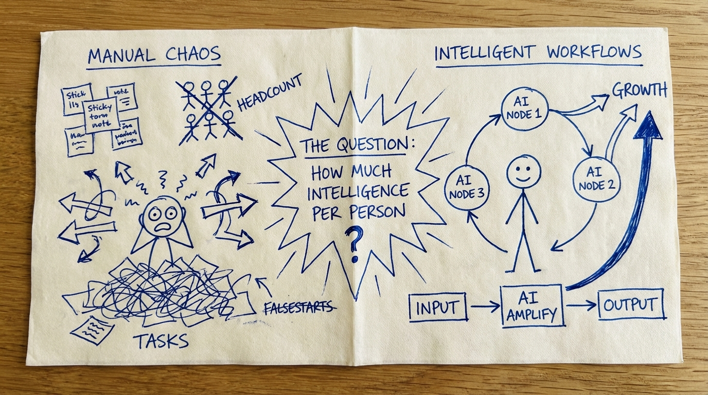
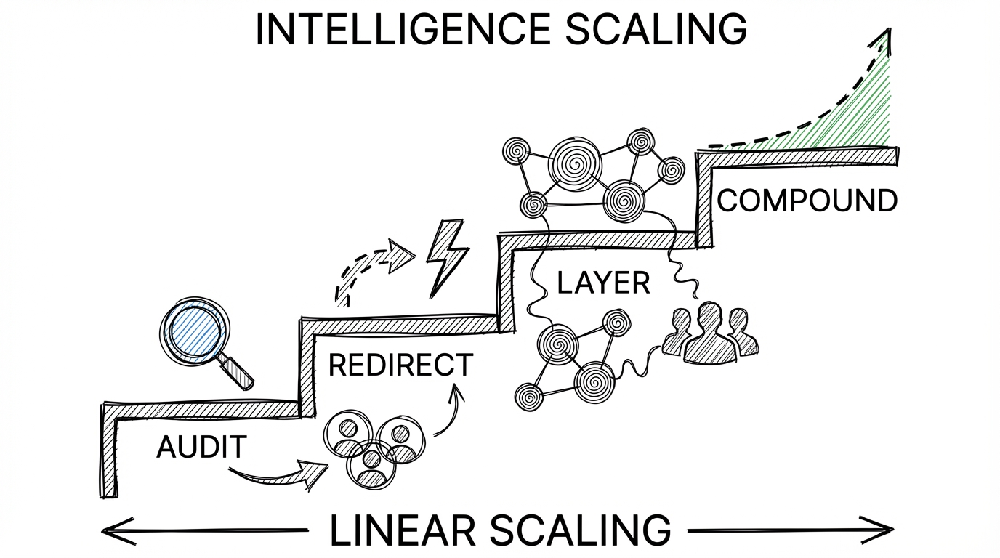
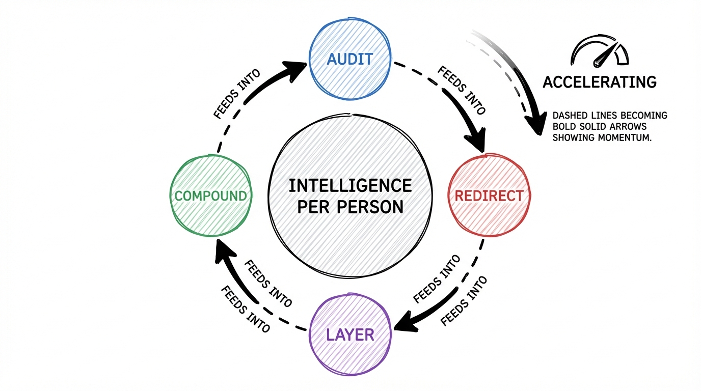
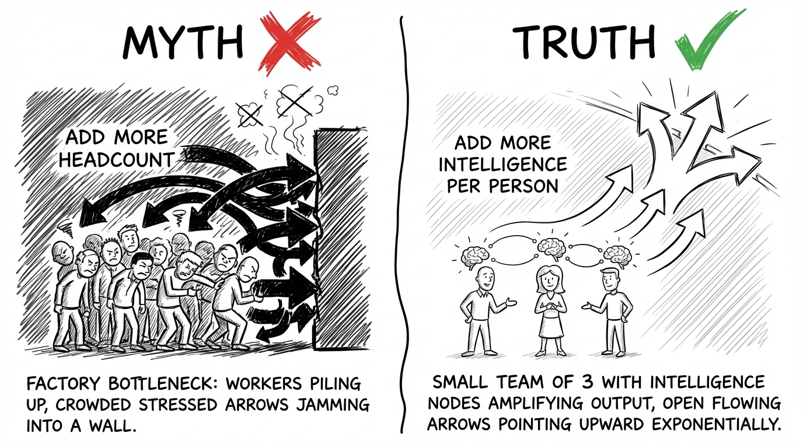

The 30-Point Gap Between AI Adopters and Everyone Else
Your Competitor Stopped Hiring. They Started Winning.
One logistics company cut inventory costs 30%, improved on-time delivery 25%, and increased retention 15% -- without adding a single person. The strategy is not a secret. It is just uncomfortable.

Your CFO is accidentally right.
Everyone says "do more with less" is a budget excuse. A corporate mantra designed to squeeze blood from a stone. That is exactly why most operations teams stay on the treadmill -- running faster, hiring more, and watching margins shrink anyway.
This is for operations leaders who want to scale output without scaling headcount but feel trapped between a CFO who says no and a team that is already drowning.
If you have ever struggled with:
- Headcount requests denied while workload doubles
- Your best people burning out on data entry, report formatting, and copy-paste workflows
- Watching competitors announce results you cannot match no matter how many hours your team works
You are in the right place.
Because what if you could handle 55% more work with the same team -- redirect the salary of one unfilled position into intelligence that multiplies everyone's output -- and show your board measurable results in 30 to 90 days instead of 18-month transformation timelines?
Here is how.
How $2.4 Million Walks Out the Door

The Pattern
Researching how mid-market companies respond to operational pressure, the same story keeps surfacing. Different industries, different company sizes, different leadership teams -- but the same sequence of events every time. More work arrives. Headcount requests get denied. The team absorbs the load until something breaks.
The math everyone is using is wrong.
The Struggle
One mid-market distribution company became the clearest example. Forty million in revenue. Growing fast. The VP of Operations brought the same request to leadership three quarters in a row: five more analysts to handle order processing, inventory reconciliation, and customer reporting.
Three times, the CFO said no.
What happened next is what always happens. The VP absorbed the work himself. His team started pulling 55-hour weeks. Then 60. Their best inventory analyst quit. A major customer complained about shipping accuracy. The VP started updating his resume.
That company was bleeding $2.4 million a year in operational inefficiency. Not because the team was bad. Because the team was doing work that should never have required human hands.
They were copying data from emails into spreadsheets. Reformatting reports for three different stakeholders. Manually reconciling inventory across two systems that should have talked to each other. Smart, talented people doing the operational equivalent of carrying water in buckets when a pipe was available.
The Turning Point
The shift happened when leadership stopped asking "How many people do we need?" and started asking "How much intelligence does each person need?"
That single question changed the trajectory.
The Results
Instead of hiring five analysts at $75,000 each, the company redirected one unfilled position's salary into an intelligence layer. Automated data flows between systems. Predictive alerts for inventory exceptions. Auto-generated reports that used to take two days of manual assembly.
Within 90 days, the same team handled 40% more order volume. Error rates dropped by half. The VP who was updating his resume got promoted to Chief Operating Officer the following year.
The Intelligence-Per-Person Framework

Here is the truth: the companies pulling ahead are not spending more. They are spending differently. They redirected the headcount budget they were never going to get into intelligence that multiplies what their existing team can do.
The Intelligence-Per-Person Framework
Linear Scaling → Intelligence Scaling → Permanent Competitive Advantage
Step 1: Audit the Repetition Tax — Know Where Your Team Bleeds Hours
Every operations team carries the Repetition Tax -- the hours burned each week on tasks that follow a predictable pattern. Data entry. Report assembly. Cross-system reconciliation. Status updates that require pulling numbers from four different tools.
Most leaders underestimate this tax by 40 to 60%. Skip this step and you will automate the wrong things -- spending money on tools that solve a problem nobody had.
Example: A 150-employee e-commerce company did this audit and found their engineering team spent 35% of its time on deployment processes and manual testing. Not building. Not improving. Deploying and testing. That single insight redirected their entire automation strategy.
Step 2: Redirect the Headcount Budget — Turn Denied Positions Into Intelligence Investment
This is where the CFO becomes your ally instead of your obstacle.
Take the salary of one unfilled position -- the one you are not getting approved -- and propose redirecting it into workflow intelligence. You are not asking for new money. You are reallocating money that was already earmarked but going nowhere.
A single $75,000 salary funds a meaningful intelligence layer. Automated data flows. Predictive exception handling. Self-generating reports. AI-assisted decision support.
The conversation with finance shifts from "I need more people" to "I can deliver more output at the same cost." No CFO argues against that.
Example: A logistics company redirected the budget of two unfilled positions into automated supply chain management. The result: 30% reduction in inventory holding costs, 25% improvement in on-time deliveries, and 15% increase in customer retention. The headcount they did not hire became the margin they kept.
Step 3: Layer Intelligence Onto Existing Operations — Amplify People, Don't Replace Them
This is not about ripping out your current systems. It is about adding an intelligence layer on top of what you already have.
Think about it like electricity. When electricity became cheap and reliable, the companies that won were not the ones building power plants. They were the ones building appliances -- products that created new value using commodity power. Your ERP, your CRM, your spreadsheets -- that is your infrastructure. The intelligence layer is the appliance that makes it useful.
Your people stop being data processors and start being decision makers. Same team. Dramatically higher output.
Step 4: Compound the Advantage — Use Early Wins to Fund the Next Layer
Here is where the gap between adopters and everyone else becomes permanent.
The first intelligence layer generates savings and capacity. You take those results -- measurable, documented, real -- back to leadership. Now you are not asking for budget. You are showing ROI and requesting expansion.
Each layer compounds. Your team gets more capable. Your operations get more intelligent. Your margins improve because revenue grows without proportional cost.
Example: The mid-market e-commerce company that started with deployment automation eventually saved $600,000 annually and increased deployment frequency 15x. Each win funded the next layer. Within two years, they operated at a scale that would have required triple the headcount under the old model.
The Research Backs This Up
McKinsey found that redesign of workflows -- not technology deployment -- has the biggest effect on whether organizations see EBIT impact from AI. Companies that focused on how work gets done rather than which tools to buy captured disproportionate value. And only 6% of organizations have achieved 5% or greater EBIT impact from AI -- meaning the window to gain competitive advantage is still wide open for those willing to move.
Real-World Applications

Example 1: Netflix — Building a Billion-Dollar Engine on Commodity Infrastructure
Traditional Approach
Build and own data centers. Control infrastructure as a competitive advantage. Scale capacity through capital expenditure.
Intelligence Approach
Complete migration to AWS commodity infrastructure. Pour resources into what actually creates value: recommendation algorithms, content delivery optimization, and user experience intelligence.
The insight: Treat infrastructure as a utility. Build proprietary value only at the intelligence layer.
Result: Between 2007 and 2015, content streaming hours increased 1,000x. Netflix became a $150 billion company not by owning infrastructure but by owning the intelligence layer on top of it. The competitive moat is never in the pipes.
Example 2: A Logistics Company That Stopped Hiring and Started Winning
Before
Manual supply chain management. Routine inventory errors. Inconsistent on-time delivery. Customer churn climbing. Operations team requesting more analysts every quarter.
After Intelligence Layer
Automated supply chain with predictive analytics. Same infrastructure. Same team. New intelligence. Zero new hires.
Result: 30% reduction in inventory holding costs. 25% improvement in on-time deliveries. 15% increase in customer retention. The team went from data entry operators to strategic logistics managers -- same headcount, completely different output.
Example 3: When I Applied This to Content Operations
The Challenge
15 to 20 hours per cornerstone article. Research, synthesis, drafting, editing, extraction into multiple platforms. Good work -- unsustainable pace.
The Intelligence Layer
Applied the four-step framework to my own workflow. Audited hours. Redirected tool budget from three underused SaaS into AI-powered research and drafting. Focused human judgment on voice, strategy, and insight.
Result: Same quality. Three times the output. The framework scales down to a team of one and up to teams of hundreds. The principle is identical.
Example 4: The Morning Report That Nobody Needed to Build
Wrong Approach
Hire a junior analyst at $55,000 to spend 2 hours every Monday pulling numbers from three systems, pasting into a spreadsheet, and emailing to leadership.
Right Approach
Layer intelligence onto existing systems. Auto-pull. Auto-format. Auto-distribute Sunday night. The analyst you did not hire is the margin you kept.
Result: The manager gets Monday morning back for strategic work. Total cost: a fraction of that analyst's salary. The Intelligence-Per-Person Framework targets exactly this kind of Repetition Tax.
A $60M manufacturing company built a custom AI scheduling system from scratch. Six developers. Eighteen months. $1.2 million budget. At month eighteen, they had an incomplete prototype -- while a competitor bought a vertical AI scheduling solution for $80,000/year and was operational in six weeks.
In 2024, 47% of AI solutions were built internally. By 2025, 76% are purchased. The Repetition Tax of building infrastructure you could buy is one of the most expensive mistakes a mid-market company can make.
What Most People Get Wrong

The Myth: Scaling operations requires proportional headcount growth. Twice the revenue means twice the team. Three new product lines mean three new departments.
Why They Believe It: Because it worked for fifty years. The industrial model was built on this math. More output required more hands. Every MBA program taught it. Every operations playbook assumed it. And when you are underwater with work, the instinct is visceral -- "I need help" means "I need another person."
The Hidden Cost: This belief leads to margin compression that worsens with every hire, your best employees burned out doing work that should not require human hands, and a permanent speed disadvantage against competitors who invest in intelligence per person instead of headcount per function.
The Truth: The directive "do more with less" is correct. The method is wrong.
The problem was never that you need fewer people. The problem is you need more intelligence per person. AI capabilities reduce manual effort by 60 to 70%. Early adopters handle 55% more work. The gap is real and it is compounding.
It is not a budget problem. It is a model problem. When you shift from "I need headcount" to "I need intelligence per person," the constraint dissolves. The CFO becomes your partner. The team becomes more capable instead of more exhausted.
How to Implement This (Starting Today)
Your 4-Week Implementation Plan
You do not need a transformation budget. You need one week of data and one conversation.
- Week 1 — Audit the Repetition Tax: Have every team member track their time for five days. Categorize each task: "requires human judgment" or "follows a predictable pattern." Most leaders find 30–50% of total hours are pattern-based.
- Week 2 — Identify the Highest-Value Redirect: Rank pattern-based tasks by hours consumed and business impact of errors. Pick one. Not five. Not ten. One.
- Week 3 — Build the Business Case: Calculate the cost of your target process. Research purchased AI solutions. Present a one-page comparison: "Cost of doing nothing vs. cost of intelligence layer." Frame it as redirecting an unfilled position's salary, not new spending.
- Week 4 — Deploy the First Layer: Implement. Start with a 2-week parallel run alongside the manual process. Validate accuracy. Cut over. Document everything -- this is the proof that funds Layer Two.
This is how you shift the conversation from "should we do this?" to "where do we do this next?"
Quick-Start Checklist
Before you begin:
- Identify your team's top 3 time-consuming pattern-based tasks (you know them -- they are the ones your team complains about)
- Calculate the loaded cost per hour of the people doing those tasks
- Identify one unfilled or upcoming headcount request you can redirect
Your first 24 hours:
- Send your team a simple time-tracking template -- a shared spreadsheet with task name, time spent, and "judgment required: yes/no"
- Block 30 minutes on your calendar this Friday to review the first week's data
- Research 3 vertical AI or automation solutions specific to your industry and your highest-pain process
Do not expect your team to immediately embrace the change. People fear what they do not understand. Expect resistance to melt once people see the intelligence layer handling the work they hated doing.
Nobody mourns copy-paste tasks.
The Bottom Line
The Intelligence-Per-Person Framework comes down to this:
Stop asking for more people. Start asking for more intelligence per person.
The companies winning right now are not bigger. They are not spending more. They invested differently -- redirecting headcount budgets into intelligence layers that multiply what their existing teams can do. Early adopters handle 55% more work. Laggards handle 25%. That gap compounds every quarter.
The people who win at this are not technical wizards. They are not AI experts. They are operations leaders who are tired of the headcount treadmill and willing to try a different kind of investment. They are the ones who redirect instead of request.
If you do nothing else, start here: Track your team's time for one week. Separate "requires human judgment" from "follows a predictable pattern." When you see the Repetition Tax number, you will not be able to unsee it.
Your next step: Take the one process that bleeds the most hours and build a one-page business case for replacing it with intelligence. Frame it as a redirect of existing budget, not new spending. Present it to your CFO this month.
If this shifted how you think about scaling operations, share it with an operations leader who is stuck on the headcount treadmill. They need to see this.
becomes the competitive advantage
you cannot lose.